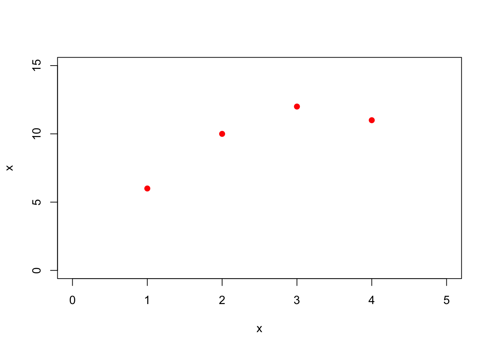
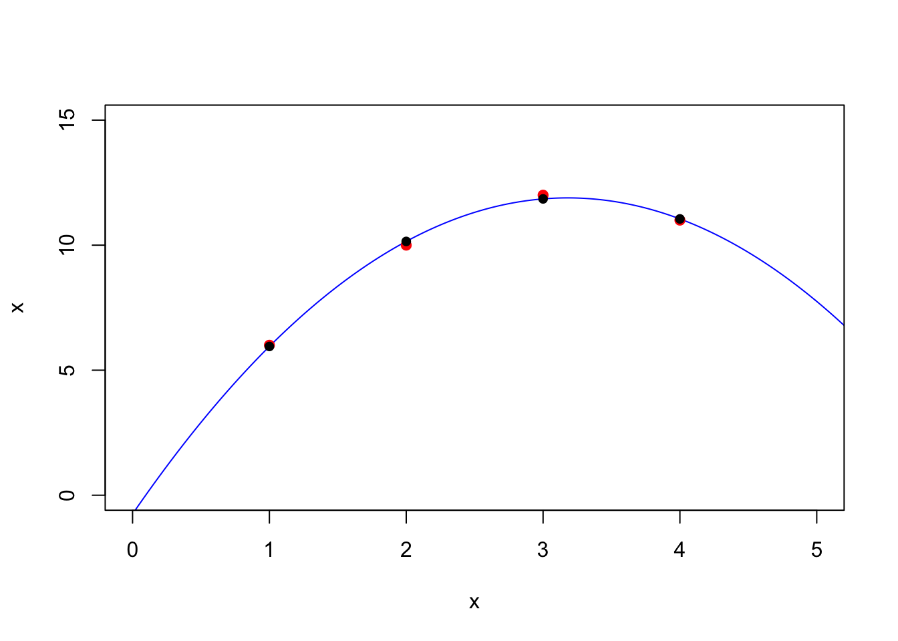

Section 20 Least Squares Approximation
20.1 Least Squares
The Why: Given a matrix \(A\) and a vector \(\mathsf{b}\) that is not in \(W = \mathrm{Col}(A)\), we want to find the “best approximate solution†\(\hat{\mathsf{b}} \in W\). In other words, we want to pick the best possible \(\hat{\mathsf{b}} \approx \mathsf{b}\) that lies in the column space of \(A\).
The What: The answer is to use projections.
- This “best approximation†is the projection \(\hat{\mathsf{b}} = \mbox{proj}_W \mathsf{b}\).
- The residual vector vector \(\mathsf{r} = \mathsf{b} - \hat{\mathbf{b}}\) is in \(W^{\perp}\).
- The length \(\| \mathsf{r} \|\) of the residual vector measures the closeness the approximation.
- The approximate solution to our original problem is the vector \(\hat{\mathsf{x}}\) such that \(A \hat{\mathsf{x}} = \hat{\mathsf{b}}\).

20.2 Example
Find the least-squares solution to \({\mathsf{A}}x = \mathsf{b}\) if \[\begin{equation} {\mathsf{A}}= \begin{bmatrix} 1 & 1 \\ 1 & 2 \\ 0 & -1 \\ \end{bmatrix} \quad \mbox{and} \quad \mathsf{b}= \begin{bmatrix} 1 \\ 1 \\ 3 \end{bmatrix}. \tag{20.1} \end{equation}\] First, for good measure, let’s see if the system is inconsistent
A = cbind(c(1,1,0),c(1,2,-1))
b = c(1,1,3)
Ab = cbind(A,b)
Ab## b
## [1,] 1 1 1
## [2,] 1 2 1
## [3,] 0 -1 3rref(Ab)## b
## [1,] 1 0 0
## [2,] 0 1 0
## [3,] 0 0 1True indeed: \(\mathsf{b}\not \in Col({\mathsf{A}})\).
Now we compute the normal equations to see what they look like:
t(A) %*% A## [,1] [,2]
## [1,] 2 3
## [2,] 3 6t(A) %*% b## [,1]
## [1,] 2
## [2,] 0So we are going to instead solve the following normal equations instead of (20.1): \[\begin{equation} \begin{bmatrix} 2 & 3 \\ 3 & 6 \\ \end{bmatrix} \begin{bmatrix} x_1 \\ x_2 \end{bmatrix} = \begin{bmatrix} 2 \\ 0 \end{bmatrix}. \tag{20.2} \end{equation}\]
We can do this in the following nice, single R command
(xhat = solve(t(A) %*% A, t(A) %*% b))## [,1]
## [1,] 4
## [2,] -2To compute \(\hat b\) we use
(bhat = A %*% xhat)## [,1]
## [1,] 2
## [2,] 0
## [3,] 2And to get the residual, we use
(r = b - bhat)## [,1]
## [1,] -1
## [2,] 1
## [3,] 1sqrt(t(r) %*% r)## [,1]
## [1,] 1.732051We can also check that the residual is orthogonal to \(Col({\mathsf{A}})\):
t(A) %*% r## [,1]
## [1,] 0
## [2,] 020.3 Template
The following R code does it all. You can use this as a template for future problems. Just enter the matrix A and the vector b.
# Given: the matrix A
A = cbind(c(1,1,0),c(1,2,-1))
# Given: the target vector b
b = c(1,1,3)
#solve the normal equation
(xhat = solve(t(A) %*% A, t(A) %*% b))
# find the projection
(bhat = A %*% xhat)
# find the residual vector
(r = b - bhat)
# check that z is orthogonal to Col(A)
t(A) %*% r
# measure the distance between bhat and b
sqrt(dot(r,r))20.4 Example from Class: Dec 1
Use the template from the previous section.
# Given: the matrix A
A = cbind(c(1,0,1,2),c(2,1,2,1))
# Given: the target vector b
b = c(3,5,9,9)
#solve the normal equation
(xhat = solve(t(A) %*% A, t(A) %*% b))
## [,1]
## [1,] 3
## [2,] 2
# find the projection
(bhat = A %*% xhat)
## [,1]
## [1,] 7
## [2,] 2
## [3,] 7
## [4,] 8
# find the residual vector
(r = b - bhat)
## [,1]
## [1,] -4
## [2,] 3
## [3,] 2
## [4,] 1
# check that z is orthogonal to Col(A)
t(A) %*% r
## [,1]
## [1,] 0
## [2,] 0
# measure the distance between bhat and b
sqrt(dot(r,r))
## [1] 5.47722620.5 Fitting a Linear Function
Here are some points that we’d like to fit to a linear function \(y = a_0 + a_1 x\).
Note: Here we use y instead of b because we like to write linear equations as “\(y = cx + d\).†So the expression “\(b = a_0 + a_1 x\)†looks funny to us. So we will talk about y and yhat instead of b and bhat.
x = c(1,2,3,4,5,6)
y = c(7,2,1,3,7,7)
plot(x,y,pch=19,ylim=c(0,10))
grid()
The linear equations that we want to fit are as follows. \[ \begin{bmatrix} 1 & 1 \\ 1 & 2 \\ 1 & 3 \\ 1 & 4 \\ 1 & 5 \\ 1 & 6 \\ \end{bmatrix} \begin{bmatrix} a_0 \\ a_1 \end{bmatrix} = \begin{bmatrix} 7 \\ 2 \\ 1 \\ 3 \\ 7 \\ 7 \end{bmatrix}. \]
These equations are inconsistent, so we solve the normal equations \(A^T A x = A^T y\) and find an approximate solution instead. Pro Tip: a clever way to create the desired matrix \(A\) is to use the fact that \(x^0=1\) for any number \(x\).
(A = cbind(x^0,x))## x
## [1,] 1 1
## [2,] 1 2
## [3,] 1 3
## [4,] 1 4
## [5,] 1 5
## [6,] 1 6Let’s take a look at the normal equations:
t(A) %*% A## x
## 6 21
## x 21 91t(A) %*% y## [,1]
## 27
## x 103So the normal equations to solve are below. It’s surprising how, even though there are 6 variables, we only have to solve a 2x2 equation, since there are 2 unknowns. \[ \begin{bmatrix} 6 & 21 \\ 21 & 91 \\ \end{bmatrix} \begin{bmatrix} a_0 \\ a_1 \end{bmatrix} = \begin{bmatrix} 27 \\ 103 \end{bmatrix}. \]
(xhat = solve(t(A) %*% A, t(A) %*% y))## [,1]
## 2.8000000
## x 0.4857143This tells us that the desired intercept is \(a_0 = 2.8\), the desired slope is \(a_1 = 0.4856\), and the linear model is \(y = 2.8 + 0.4856x\).
We can plot the points together with the solution using:
#plot the original set of points
plot(x,y,pch=19,xlim=c(0,7),ylim=c(0,10), main='the best-fit linear function')
# generate points for the fitted line and plot it
tt = seq(1,6,len=100)
lines(tt,xhat[1]+xhat[2]*tt,col='blue')
# get yhat
yhat = A %*% xhat
# add the residuals to the plot
for (i in 1:length(x)) {
lines(c(x[i],x[i]),c(y[i],yhat[i]), col='red')
}
#add yhat to the plot
points(x,yhat,pch=19,col='orange')
#put the original points back on the plot last so we can see them
points(x,y,pch=19,col="black")
grid()In this visualization we see the following:
The black points: the original data points
cbind(x,y). This represents the entries of the desired target vectory.The blue curve: the fitted curve, created from the approximate solution
xhat.
The orange points: the approximations
cbind(x,yhat)of the data pointscbind(x,y). This represents entries of the projectionyhat.The red line segments: the distances between the original data points (block dots) and their approximations (orange dots). The lengths of these red segments are the entries of the residual vector
r.
Let’s look at the residual and see that it is indeed orthogonal to the columns of \(A\).
yhat = A %*% xhat
r = y - yhat
res=cbind(y,yhat,r)
colnames(res) = c("y","yhat","r")
res## y yhat r
## [1,] 7 3.285714 3.714286
## [2,] 2 3.771429 -1.771429
## [3,] 1 4.257143 -3.257143
## [4,] 3 4.742857 -1.742857
## [5,] 7 5.228571 1.771429
## [6,] 7 5.714286 1.285714t(A) %*% r## [,1]
## -8.881784e-16
## x 3.552714e-15t(r) %*% r## [,1]
## [1,] 35.3714320.6 Fitting a Quadratic Function
The data we have been working with has a quadratic look to it, so let’s try adding an \(x^2\) term. That is, we will fit the model \(y = a_0 + a_1 x + a_2 x^2\). The equations we want to solve are In this case, the linear model that we’d like to solve is: \[ \begin{bmatrix} 1 & 1 & 1\\ 1 & 2 & 4 \\ 1 & 3 & 9 \\ 1 & 4 & 16 \\ 1 & 5 & 25 \\ 1 & 6 & 36 \\ \end{bmatrix} \begin{bmatrix} a_0 \\ a_1 \\ a_2 \end{bmatrix} = \begin{bmatrix} 7 \\ 2 \\ 1 \\ 3 \\ 7 \\ 7 \end{bmatrix}. \]
It is easy enough to add this to our matrix \(A\).
(A = cbind(x^0,x,x^2))## x
## [1,] 1 1 1
## [2,] 1 2 4
## [3,] 1 3 9
## [4,] 1 4 16
## [5,] 1 5 25
## [6,] 1 6 36In this case our normal equations are 3x3
t(A) %*% A## x
## 6 21 91
## x 21 91 441
## 91 441 2275t(A) %*% y## [,1]
## 27
## x 103
## 499\[ \begin{bmatrix} 6 & 21 & 91 \\ 21 & 91 & 441 \\ 91 & 441 & 2275 \end{bmatrix} \begin{bmatrix} a_0 \\ a_1 \\ a_2 \end{bmatrix} = \begin{bmatrix} 27 \\ 103 \\ 499 \end{bmatrix}. \] Whose solution is computed by
(xhat = solve(t(A) %*% A, t(A) %*% y))## [,1]
## 10.3000000
## x -5.1392857
## 0.8035714Notice that our solution is now \(y = 10.3 - 5.1393 x + 0.8036 x^2\). The linear term is now negative, but there is a positive quadratic term. Let’s look at the same plo but with the addex \(x^2\) term. We see that the residuals are smaller and, importantly, the model appears to better fit the data.
#plot the original set of points
plot(x,y,pch=19,xlim=c(0,7),ylim=c(0,10), main='the best-fit quadratic function')
# generate points for the fitted line and plot it
tt = seq(0,7,len=100)
lines(tt,xhat[1]+xhat[2]*tt+xhat[3]*tt^2,col='blue')
# get yhat
yhat = A %*% xhat
# add the residuals to the plot
for (i in 1:length(x)) {
lines(c(x[i],x[i]),c(y[i],yhat[i]), col='red')
}
#add yhat to the plot
points(x,yhat,pch=19,col='orange')
#put the original points back on the plot last so we can see them
points(x,y,pch=19,col="black")
grid()
Let’s look again at the residual and see that it is indeed orthogonal to the columns of \(A\) and see that the residual got shorter.
yhat = A %*% xhat
r = y - yhat
res=cbind(y,yhat,r)
colnames(res) = c("y","yhat","r")
res## y yhat r
## [1,] 7 5.964286 1.035714
## [2,] 2 3.235714 -1.235714
## [3,] 1 2.114286 -1.114286
## [4,] 3 2.600000 0.400000
## [5,] 7 4.692857 2.307143
## [6,] 7 8.392857 -1.392857t(A) %*% r## [,1]
## -1.820766e-14
## x -2.486900e-14
## -1.847411e-13t(r) %*% r## [,1]
## [1,] 11.2642920.7 Checkpoint 6.5
Here we have 4 data points
xdata = c(1,2,3,4)
ydata = c(6,10,12,11)
plot(xdata,ydata,xlim=c(0,5),ylim=c(0,15),xlab='x',ylab='x',col='red',pch=19)
20.7.1 Linear Fit
Fit a line to the data: \(a + b x\)
A = cbind(xdata^0,xdata^1)
t(A)%*% A
## [,1] [,2]
## [1,] 4 10
## [2,] 10 30
t(A)%*% ydata
## [,1]
## [1,] 39
## [2,] 106
(xhat = solve(t(A)%*%A,t(A)%*%ydata))
## [,1]
## [1,] 5.5
## [2,] 1.7And plot it:
t = seq(0,6,by=.01)
plot(t,xhat[1] + xhat[2]*t,col='blue',xlim=c(0,5),ylim=c(0,15),xlab='x',ylab='x',type='l')
points(xdata,ydata,,col='red',pch=19)Compute the residual:
(yhat = A %*% xhat)
## [,1]
## [1,] 7.2
## [2,] 8.9
## [3,] 10.6
## [4,] 12.3
(r = ydata - yhat)
## [,1]
## [1,] -1.2
## [2,] 1.1
## [3,] 1.4
## [4,] -1.3
t(A) %*% r
## [,1]
## [1,] 7.105427e-15
## [2,] 3.552714e-15
sqrt(t(r) %*% r)
## [,1]
## [1,] 2.5099820.7.2 Quadratic Fit
Fit a parabola to the data: \(a + b x + c x^2\)
A = cbind(xdata^0,xdata^1,xdata^2)
t(A)%*% A
## [,1] [,2] [,3]
## [1,] 4 10 30
## [2,] 10 30 100
## [3,] 30 100 354
t(A)%*% ydata
## [,1]
## [1,] 39
## [2,] 106
## [3,] 330
(xhat = solve(t(A)%*%A,t(A)%*%ydata))
## [,1]
## [1,] -0.75
## [2,] 7.95
## [3,] -1.25And plot it:
t = seq(0,6,by=.01)
plot(t,xhat[1] + xhat[2]*t+ xhat[3]*t^2,col='blue',xlim=c(0,5),ylim=c(0,15),xlab='x',ylab='x',type='l')
points(xdata,ydata,,col='red',pch=19)
Compute the residual:
(yhat = A %*% xhat)
## [,1]
## [1,] 5.95
## [2,] 10.15
## [3,] 11.85
## [4,] 11.05
(r = ydata - yhat)
## [,1]
## [1,] 0.05
## [2,] -0.15
## [3,] 0.15
## [4,] -0.05
t(A) %*% r
## [,1]
## [1,] 4.440892e-15
## [2,] 5.062617e-14
## [3,] 3.286260e-14
sqrt(t(r) %*% r)
## [,1]
## [1,] 0.2236068And add the residuals to the plot
t = seq(0,6,by=.01)
plot(t,xhat[1] + xhat[2]*t + xhat[3]*t^2,col='blue',xlim=c(0,5),ylim=c(0,15),xlab='x',ylab='x',type='l')
for (i in 1:length(xdata)){lines(c(xdata[i],xdata[i]),c(ydata[i],yhat[i]),type='l')}
points(xdata,ydata,,col='red',pch=19)
points(xdata,yhat,pch=16)